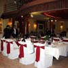

sreda, 10. junij 2009.
Na Svetoj Gori
 Svako prolećno putovanje (do neke evropske prestonice, mađarske ili češke banje, italijanskih regiona) osvežava i popravlja raspoloženje, ali teško da bilo koja destinacija više od Svete Gore može čoveka da opusti, oslobodi nervoze i resetuje. Put na Svetu Goru je ujedno i hodočašće, i aktivan odmor uz šetnju i planinarenje, i meditiranje uz more, mesec i zvezde, mirise i zvuke.
Svako prolećno putovanje (do neke evropske prestonice, mađarske ili češke banje, italijanskih regiona) osvežava i popravlja raspoloženje, ali teško da bilo koja destinacija više od Svete Gore može čoveka da opusti, oslobodi nervoze i resetuje. Put na Svetu Goru je ujedno i hodočašće, i aktivan odmor uz šetnju i planinarenje, i meditiranje uz more, mesec i zvezde, mirise i zvuke.
ãetrtek, 4. junij 2009.
Mađarska svadba
 Svadbe spadaju među najbitnije i najzanimljivije običaje u društvu, bez obzira na promene i pojednostavljivanja kroz vreme, globalizaciju i slično.
I, da, ljude definitivno interesuje kako sve to izgleda negde drugde, a prilike za saznavanje i nisu baš česte. Moja iskustva u tom pogledu su skromna: Jednom sam u Poljskoj bila na crkvenom venčanju, i jednom smo u Grčkoj, slučajno, naišli na svadbu u bašti restorana, pa i svratili i uhvatili se u kolo. Ali, nikad nisam učestvovala u celom procesu kao ovde u Mađarskoj, uključujući i par dana pre i par dana posle.
ponedeljek, 8. september 2008.
Madona u Budvi. Update
O predostojećem Madoninom koncertu, pa i o tome kako stići do Jaza i koliko će vas to koštati, pišu skoro svi - od zvaničnih medija, do posebno za ovu priliku napravljenih blogova, foruma opšte namene, ali se o temi raspravlja i na sajtovima kao što su "Ceca Online", "Najnoviji tračevi", "Portal farmaceuta", "Krajinaforce - Glas Krajišnika u egzilu", "Rakijanje.com" i sve između toga.
ponedeljek, 1. september 2008.
Banje Budimpešte
petek, 8. avgust 2008.
Kreativni turizam
sreda, 16. julij 2008.
Pet stvari o Atini
petek, 14. december 2007.
Istanbul i Bosfor
ponedeljek, 5. november 2007.
Arhipelag Evropa
nedelja, 9. september 2007.
Žedni putnik
torek, 7. avgust 2007.
Letnji obrok
ponedeljek, 28. maj 2007.
Campagna di Roma
ãetrtek, 24. maj 2007.
Španske slike, 3. deo
torek, 15. maj 2007.
Španske slike, 2. deo
ãetrtek, 10. maj 2007.
Španske slike, 1. deo
torek, 17. april 2007.
Grenoble, par slika
sobota, 17. marec 2007.
Prizery v Praze
nedelja, 4. marec 2007.
Šezdesetih...
ãetrtek, 22. februar 2007.
Proleće u Italiji
torek, 13. februar 2007.
Venecija i druge priče
torek, 16. januar 2007.
Put u Italiju, prvi deo
ãetrtek, 30. november 2006.
Novi Sad: 7+3
ponedeljek, 30. oktober 2006.
7 stvari o Ljubljani
torek, 24. oktober 2006.
Evropski web projekti
ponedeljek, 23. oktober 2006.
Prix Europa
torek, 29. avgust 2006.
Život na seminarima
sreda, 23. avgust 2006.
Morski putevi: M - Š
torek, 22. avgust 2006.
Morski putevi: A - Lj
ponedeljek, 21. avgust 2006.
Savršeno letovanje
sreda, 2. avgust 2006.
Praha Romantická
ponedeljek, 17. julij 2006.
Otključani globus
sobota, 8. julij 2006.
O petlu i zrikavcima
sreda, 5. julij 2006.
Tour de France
nedelja, 2. julij 2006.
Le(t)nji dani
torek, 27. junij 2006.
Koktel i regata
ãetrtek, 15. junij 2006.
Put put, put za jug
sreda, 7. junij 2006.
Ca va? Ca va bien!
nedelja, 14. maj 2006.
Priča o ključu

 RSS feed
RSS feed
 sadržaji se objavljuju pod
sadržaji se objavljuju pod